Рестораны Хуа Хина
Vip уровень:
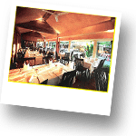Ресторан «La Grappa»
Ресторан «La Grappa» по праву можно назвать одним из лучших итальянских ресторанов в Хуа Хине. В меню для Вас представлены разнообразные блюда итальянской кухни. Вечер проведенный в «La Grappa» оставит очень приятные гастрономические впечатление у ценителей высококачественной итальянской кухни. Для Вас представлен большой выбор итальянских вин и дессертов. Обслуживание в ресторане очень достойное.
Адрес: 20/5 Poolsuk Road, Хуахин 77110, Таиланд
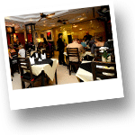
Ресторан «Prime Stakehouse»
Очень хорший ресторан. Все блюда, представленные в меню приготовлены из свежайших продуктов. Ресторан предлагает блюда европейской кухни. Также Вашему Внимаю в меню представлены стейки австралийского мяса. Также Вашему внимаю будет предложено прекраное вино. Высококлассное обслуживание и приятная атмосфера оставят у Вас самые положительные впечатления.
Адрес: 8/5-7 Soi Kanjanomai | poolsuk Road, Хуахин, Таиланд.
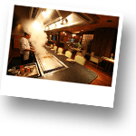
Ресторан «Hagi»
Элитный японский ресторан, относящийся к отелю Sofitel Grand Centara. Ресторан «Hagi» предлагает Вашему вниманию истинную японскую кухню. По Вашему желанию, повар может приготовить некоторые блюда прямо на вашем столе. Вас приятно удивит качество блюд и качество обслуживания, которое соответствует очень высоким стандартам.
Адрес: 1 Damnernkasem Road | Centara Grand Beach Resort & Villas Hua Hin Hotel, Хуахин 77110, Таиланд
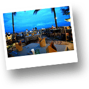
Ресторан «Сосо 51»
Ресторан «Сосо 51» - одино из самых красивых и романтичных мест в Хуа Хине. Вас приятно удивит царящая в ресторане атмосфера. «Coco 51» находиться на берегу моря. Для Вас открывается прекрасный вид на вечернее побережье Хуа Хина. В ресторане представлены блюда европейской кухни отменного качества, а также блюда национальной тайской кухни. Вечерами в ресторане звучит приятная живая музыка, которая позволит Вам полностью погрузиться в романтическую атмосферу вечера.
Адрес: Hua Hin 51 | Prachuapkirikan, Хуахин, Таиланд
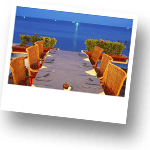
Ресторан «Brasseriе de Paris»
«Brasserie de Paris» истинно французкий ресторан. В меню Вы найдете большой выбор фрацузких блюд и вин. Блюда приготовлены по французким стандартам без намека на тайский стиль в кулинарии. Этот ресторан может похвастаться прекрасным обслуживанием и замечетельной обстановкой. Вы сможете почувствовать себя в одном из маленьки кварталов Парижа. Ресторан имеет вид на море, что придает ему дополнительную привлекательность.
Адрес: 3 Naresdamri Rd, Хуахин, Таиланд
Бизнес-уровень:
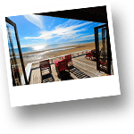
Ресторан «Let's Sea»
Очень приятное место. Отличается романтической обстановкой, расположен «Lets Sea» на берегу моря. Ресторан может похвастаться приятным интерьером и достойным обслуживанием. Это хороший выбор, для приятного ужина на берегу моря. Ресторан предлагает весьма изысканные блюда европейской кухни.
Адрес: 83/155 Soi Talay 12 Khaotakieb | Hua Hin Road, Hua Hin, Хуахин, Таиланд
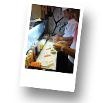
Ресторан «Sakura»
Прекрасный японский ресторан, в котором Вашему вниманию предложены замечательные блюда японской кухни. Меню ресторана очень разнообразно. Качество блюд изумительное, все приготовлено из свежайших продуктов. Качество предлагаемых блюд полностью соответствует их стоимости. Обстановка в очень приятная, но тем не менее ресторан не может похвастаться особенным видом или необычным интерьером. Это место для приятного ужина c семьей или с друзьями. Ресторан больше подходит для приятного ужина вне дома, но не для романтичного вечера. Обслуживание в ресторане достаточно хорошее.
Адрес: Soi 94, Hua Hin, Thailand
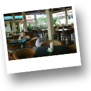
Ресторан «Papa John»
Достойны Вашего внимания ресторан. «Papa John» гриль-ресторан, в котором для Вас приготовят прекрасные стейки. Вашему вниманию предлагаются различные виды мяса: австралийская говядина, телятина, свина, баранина. Стоимость на стейки достаточно высокая, но в то же время качество мяса и уровень приготовления очень достойные. Также наравне с европейскими блюдами и стейками, Вашему вниманию предлагаются блюда тайской кухни. В ресторане очень хорошее обслуживани. Большой выбор спиртных напитков.
Адрес: 1/154 Soi Moobaan Khao Takiab, Хуахин, Таиланд
Ресторан «Dacha»
Единственный ресторан русской кухни представленный в Хуа Хине. Для Вас будут предложены традиционные русские блюда. Также в ресторане имеется меню блюд итальянской кухни. Ресторан подходит для приятного вечера в дружеской атмосфере. Вас ждет хороший прием и обслуживание. Все Ваша пожелания будут учтены хозяевами ресторна и Вы проведете приятный вечер в непринужденной обстановке. Ресторан не имеет определенного вида и не отличается особым интерьером, больше подходит для семейного ужина или вечера в компании друзей.
Адрес: Soi 94, Hua Hin, Thailand
Рекомендованые рестораны Тайской кухни:
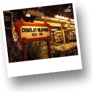
Ресторан «Chao Lay»
Это самый первый ресторан морепродуктов открывшийся в Хуа Хине. В ресторане Вашему вниманию представлены блюда тайской кухни, приготовленные в лучших традициях, а также огромный выбор рыбы и морепродуктов. Ресторан находится в самом центре города. Качество болюд – высокое. «Chao Lay» расположен на берегу моря, на деревяном пирсе. Вы сможете насладится закатом, если отправитесь на ужин в районе 18.00. Очень популярное место как среди туристов, так и среди местных жителей. Приятная атмосфера, вкусная еда, хорошее обслуживание и изумительный вид на море не оставят Вас равнодушными. Идеальное место, чтобы попробовать качественные блюда тайской кухни.
Адрес: 15 Naresdamri Rd, Hua Hin, Thailand
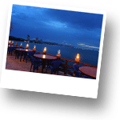
Ресторан «La Mer»
Тайский ресторан морепродуктов. Расположен на горе Као Такиаб (Khao Takiap), откуда открывается изумительный вид на город. Очень красиво вечером, когда Вашему взору открывеается ночной Хуа Хин. Ресторан больше подойдет для сесейного ужина или ужина в компании друзей. Качество еды достойное. Обслуживание очень простое и прямо скажем ненавязчивое, интерьер не представляет ничего особенного. Все очень просто. Нов то же время за счет своего расположения это место достойно Вашего внимания.
Адрес: khao takiab, Hua Hin, Thailand
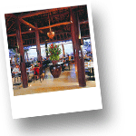
Ресторан «Supatra By the Sea»
Прекрасный ресторан морепродуктов. Находится в южной части города, у подножья горы Као Такиаб (Khao Takiap). Известный ресторан. Отличается хорошим сервисом. Расположен на берегу моря. В выходные дни в ресторане играет живая музыка. Вашему вниманию в меню представлены блюда тайской кухни и морепродукты. Несмотря на то, что тайская еда представлена в меню в широком ассортименте, лучший выбор при посещении этого ресторана – рыба и морепродукты. Рядом с «Supatra By the Sea» находится рыбацкая деревня и все морепродукты и рыба в ресторан привозят именно оттуда, а это значит, что у Вас есть прекрасная возможность попробовать то, что буквально за пол часа до Вашего заказа плавало в море. Также место хорошо подходит для романтического ужина.
Адрес: 122/63 Takiab Road, Hua Hin 77110 , Thailand
Эконом-уровень:
По всему городу Вы можете видеть множество протейших ресторанов и кафе в тайском стиле, а также разные бистро и фаст-фуды. Хуа Хин небольшой город, но тем не менее Вы встретите очень много мест, где Вы можете поужинать или пообедать. В отличие от других ресторанов на иных курортах Тайланда, рестораны и кафе Хуа Хина очень дорожат своей репутацией и своими посетителями, многие туристы возвращаются в Хуа Хин вновь и вновь и приходят в свои излюбленные места. Именно по этой причине большая часть кафе и рестораов эконом-класса очень достойные.
Эксклюзивно:
«La Bar Francais» Лучший выбор вина в Хуа Хине!!!
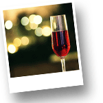В баре «Le Bar Francais» представлен большой ассортимент высококачественных вин. Ценители вина по достоинству оценят весь представленный ассортимент. Владельцы заведения действительно очень трепетно относятся к подбору вина для посетителей «Le Bar Francais». Также Вашему вниманию предлагается меню, в котором Вы найдете удивительные легкие закуски, которые станут прекрасным дополнением к выбранному вину. В баредля Вас представлен прекрасный выбор алкогольных коктейлей, приготовленных по лучшим стандартам. Очень приятная атмосфера и качественное обслуживание оставят у Вас самые приятные впечатления от проведенного вечера в «Le Bar Francais».
Бар находится на улице Poolsuk Rd. – в правом переулке, около отеля City Beach
Работает до 00.00 ночи.
Ресторан-бар «La Birra» Самый лучший выбор пива в Хуа Хине!!!
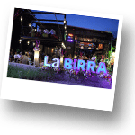Отличный пивной бар-ресторан. Самый большой выбор пива в Хуа Хине. В меню Вы найдете более 30-ти сортов разнообразного пива на любой вкус. Вкусная еда и прекрасные легкие закуски. Очень красиво и правильно оформлено само заведение. Качественный сервис. Отличное место для прведения вечера в непринужденной обстановке. В выходные играет замечетельная живая музыка. Место особенно рекомендовано для любителей и ценителей пива. В «La Birra» царит очень приятная и расслабленная атмосфера.
Ресторан-бар расположен напротив Cicada Market
Работает до 2.00 ночи
Бар «Black Out» Оличные алкогольные коктейли в Хуа Хине!!!
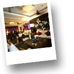Этот бар оценят любители алкогольных коктелей. «Black Out» предлагает Вам огромный выбор самых разнообразных, а главное действительно правильно приготовленных коктейлей. В баре очень приятная обстановка. Для Вас играет современная европейская музыка. Прекрасное место, где Вы можете расслабиться после ужина и приятно провести время.
Бар находится в самом центре города в одном из переулков напротив отеля Hilton
Работает до 2.00 ночи